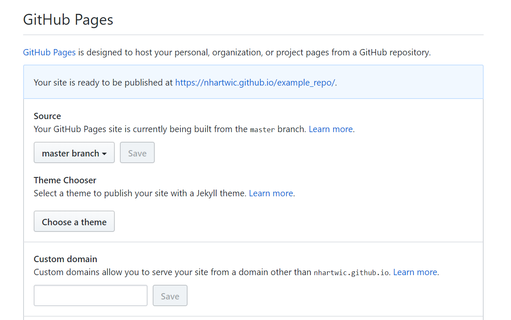

Using Github Pages for Projects
Step 1
Add/rename a file in your project to be "index.html". This page will act as the landing page for your projects site.

Step 2
Go to the Settings tab for your project and scroll down to the Github Pages section. Click the drop down menu beneat the Source section and select 'master branch'.

Step 3
When you clicked save, your page should have refreshed. Scroll back down to the github pages section and click the link next to "your site is ready to be published"

Notes